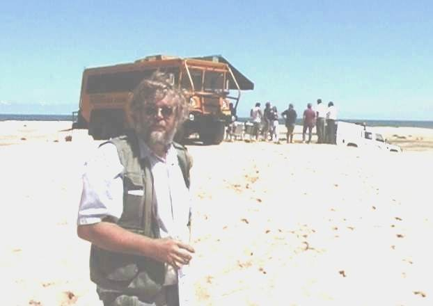
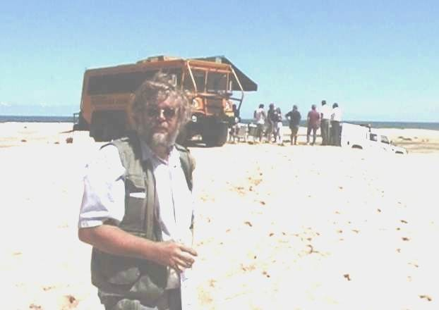

THE GOLD & SAPPHIRE TOUR
DAY 1 MOUNTAIN CAMP
DAY 1: Departure from the major airport closest to your home flight
toSydney, Australia.
DAY 2: Arrival in Sydney where we will be met by Dieter Hartmann,
a real-life "Crocodile Dundee," who has lived off theland in the outback
of Australia for a period of seven years, after which he has spent the
last 15 years sharing his knowledgeand expertise with visitors to Australia.
We will be transported to our hotel for a much-needed rest before beginning
ouradventure the next day.
Dieter is justifiably proud of the bushmobile, an awesome vehicle
which seats 24 people (but he has a maximum number ofpersons on a tour
of 18), boasts an on-board toilet, air conditioning, wood and gas fired
stove, and plenty of storage space.With all this, the bushsmobile has a
powerful Cummins diesel engine, six giant tires attached to an International
militarychassis, all of which means that it can go just about anywhere
on or off road that he would want to take it. The bushmobile isoutfitted
with a satellite phone on which you can be reached from anywhere in the
world and can place outgoing calls. Thereis also satellite navigation which
can pinpoint our location for emergency or medical help in case of illness
or accident.
Therefore, even though we will be in remote wilderness locations
much of the time, help from civilization we can be in instantcontact with
civilization and help is never far away.
On our bushmobile adventure, we will be camping out and exploring
the outback but with the conveniences and flexibility afforded by the bushmobile
and Deiter’s expertise. Typically, we’ll be feasting on grilled T-Bone
steaks, barbecue meals, breakfasts of ham and eggs, fruit, and fresh-baked
bread-- altogether a combination of hearty German-style cooking and Australian
"bush tucker." The rest of this itinerary is written by Deiter to describe
the tour:
DAY 3: Mountain Camp. The BUSHMOBILE is parked in front of our hotel.
It is 9 AM. I feel privileged to welcome you
on board the 6X6 BUSHMOBILE because I know you appreciate the difference
to conventional bus tours and didn't want to
be merely one of thousands who follow the common tourist trails as
a passenger. You look forward to play an active part in a unique experience
in the Australian bush. I trust that seeing the BUSHMOBILE in real exceeds
your expectation. Your
baggage is on top the day pack stored above your seat. Introductions
are left for later in the day and before long we drive over the Harbour
Bridge and head north through the scenic hinterland. One hour later we
cross the Hawkesbury River on a vehicle
ferry and soon we encounter the first dusty dirt road. A coffee and
toilet stop at historic SETTLERS ARMS INN is
welcomed by everyone. Now we are ready to tackle the steep and narrow
dirt road which winds its way through unpopulated country on the foothills
of the BLUE MOUNTAINS towards the little country town of WOLLOMBI. A hardy
picnic lunch
and drinks on the road site is our first experience with the self contained
outfit of the SIX-WHEELER. An easy drive through
the famous HUNTER VALLEY wine country brings us to the foot of "our
mountain" (Deiter owns this mountain, which
insures our privacy).


DENSE BUSH
HORSE RIDING AT MOUNTAIN CAMP
To get to the mountain camp the BUSHMOBILE has to prove that it is certainly
more than just a bus
and the off road capability is called upon. There is a possibility
the winch mounted on the front has to be used to traverse a
very steep gully. Some passengers may find this experience more frightening
and dangerous than others, and the effort not to
encourage the all-too-fainthearted to join a tour of this nature proves
important. With a strong sense of achievement and
respect for our SIX-WHEELER we arrive at the camp and disembark to
enjoy the fresh mountain air many kilometers away
from the nearest homestead. Naturally the driving and related aspects
still dominate the discussions as we have freshly
brewed coffee and tea. We start to set up our camp and learn how and
where to erect the tents. Bush shower, fire place and
how and when to use the on-board toilet or the bush toilet are important
topics. After the camp is set up, most of us will be
interested in a bush walk through a rain forest gorge with ferns and
unspoiled wilderness. This activity in the fresh mountain
air surely creates a big appetite. The perfect incentive to return
to the camp-- build a big camp fire and grill delicious juicy
T-bone steaks. Everybody is encouraged to help in the preparation and
serving with potatoes, salads, bread and drinks. To
enjoy this delicious dinner under 5 million stars away from the hustle
and bustle of a 5-star hotel is for many of us the ideal
way to let a surely eventful and remarkable day come to an end and
go to sleep in the cozy tents. Others may sit around the
campfire, drink a glass of wine, and relish the atmosphere.
DAY 4: SAND DUNES & OCEAN. There are no alarm clocks needed
here in the bush. Just at daybreak the kookaburras
laughter wakes us up. Only the real early birds get up at this
time and have a "cat wash" or bush shower. When the smell of
bacon and eggs on the crackling wood fire becomes irresistible,
even the notorious late starter is up and about. After breakfast
we pack up the tents and soon we are departing for another adventurous
day. Sand, sand, sand--as far as you can see, up to
30 meters high. What a contrast to the bush; there is not a tree
in sight. We are in the middle of the Southern Hemisphere’s
biggest sand dunes.


BBQ ON THE BACK OF THE BUSHMOBILE
BUSHTUCKER IN THE DUNES
The BUSHMOBILE is with certainty the biggest off-road machine these
dunes get to see. With the help
of some passengers, the air pressure in all six tires is reduced
by half to increase traction. Now with 6-wheel drive engaged we
can climb the dunes and occasionally glimpse the ocean in the distance.
We reach Stockton Beach and set up camp using the
SIX-WHEELER as a wind shelter. After lunch the 30 km of beach ocean
and sand dunes are all yours. For 2 hours you can
 

SAND BOARDING DOUN THE DUNES
DIETER AND THE BUSHMOBILE IN THE DUNES
build a sand castle, get wet in the surf, climb the dunes and toboggan
down the sheer sand slopes, find 'Pipis' a seafood
delicacy or fly a kite. Before we leave the big sand we visit the
"Sygna" shipwreck. This ship was driven ashore by storms on
her maiden voyage. The site of wrecked equipment is for me, as
owner operator, a reminder to check the oil, water and, yes,
the tire pressure before we leave the dunes. We stay over night
camping in a caravan park near the beach and get ready to go
bush the next day.
DAY 5: BARRINGTON TOPS TO THE GOLD FIELDS. After breakfast we pack up
and are on our way. Between us and
the gold fields of Nundel lies the extremely rugged Mountain district
of the BARRINGTON TOPS. We drive mainly on
forest roads cross numerous creeks and wash outs encounter spectacular
waterfalls and white water rivers. Unpredictable
weather extremes and road conditions give this region the reputation
of the wildest remaining vast mountain region in NSW.
You wouldn't want to be in a lesser capable and equipped vehicle than
the BUSHMOBILE with on- board satellite
communication, chain saw, and powerful recovery gear to cope with uncertainties.
No wonder that it is unlikely to encounter
"normal" tourists. The gold field, once teeming with fortune seekers,
have been taken over by nature. The 6x6 is able to make
it way into a remote wilderness area, and we claim our stake, a very
secluded gold field camp site. A local personality explains
all about the early gold rush er--its excitement, its joys and its
miseries. With a great anticipation for tomorrow we hit our
mattress.
DAY 6: We are in the grip of the old miners' lust and lure for gold.
Gold panning is hard work, but the hope that the next
swirl of the pan reveals specks of the magic metal and the prospect
to find a fortune spurs us on. Should you be unfortunate
and fall into total despair, I'm sure a fellow miner will help to cope.
By the end of a remarkable day everyone is richer in
knowledge, wisdom and memories.


DO WE FIND OUR FORTUNE
CAMP OVEN ROAST
DAY 7: SAPPHIRE CITY. Camping experts as we are by now, our 6x6 is ready
to depart from the gold fields in no time.
There is a real buzz in the bus as we head north towards INVERELL,
the SAPPHIRE CITY. Heinrich, our host, is not just
the owner of a vast wilderness property but a personal friend I went
to school with. Nearly 20 years ago I assisted him in the
production of a very comprehensive documentary about minerals, Riches
of the Crust. Today I regard him as one of the most
knowledgeable persons on tin and sapphires. We arrive in the afternoon
and set up camp near the sapphire bearing creek. We
have a fantastic dinner and spend the evening around the campfire and
anticipate the days to come.
DAY 8: Most of us have learned the skill of fossicking and are finding
sapphires. If you are interested, you can come along to
visit large working sapphire mines and learn all about gemstone cutting
and the value of our stones. Heinrich can also take us
hiking in dense wilderness and in the evening.... Gem hunters’ special:
the huge Australian camp oven roast...not just cooking
and eating but a ritual that takes 5 hours and involves lots of firewood,
a big bonfire, hot coal and many helpers. It culminates
in a feast and culinary indulgence you'll remember for the rest of
your life. A Bush band, sing along and some wine and beer all
in the middle of the Australian bush--No worries if the party drags
on. Not only can't the nearest neighbor hear us, it would
take him 5 hours on foot to get to us.
DAY 9: After a fantastic breakfast we pack up camp and leave the wilderness
to visit Copeton Dam. We encounter lots of
kangaroos and Australian wildlife There are good showers and toilet
facilities for us.
DAY 10: The BUSHMOBILE makes its way south and we add more Australian
Bush folklore encounters like the "Gulong
Pioneer Museum" and camp for the last time in the famous BLUE MOUNTAINS;
depending on the weather and the mood
of our group we may book in a hotel.
DAY 11: Our last stop is at the "Three Sisters" a spectacular
rock formation and soon after we see Sydney, the Olympic
City, far in the distance.The adventure part of our Australia tour
is over as we take all luggage off the Bushmobile, check in
our Hotel, and say "auf wiedersehn........ "
DAYS 12 and 13: Starting from your hotel you can spend all of two days
and as much of the nights as you wish in the City
of Sydney. The time is yours to choose from the many cultural and scenic
offerings of this cosmopolitan, multi-cultural and
diverse city.
We will each leave Sydney with a high-quality video of our Bushmobile
tour, compliments of Dieter’s skill with the video
camera.